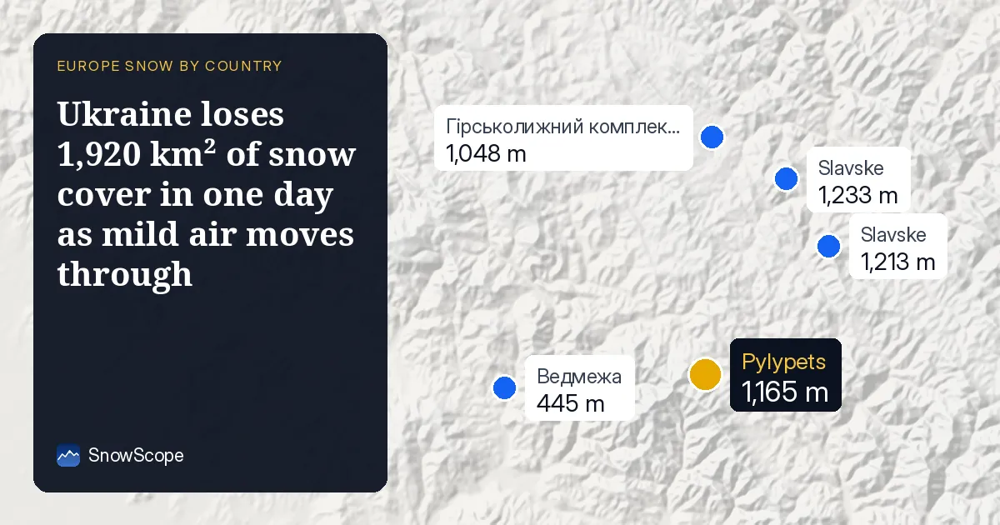
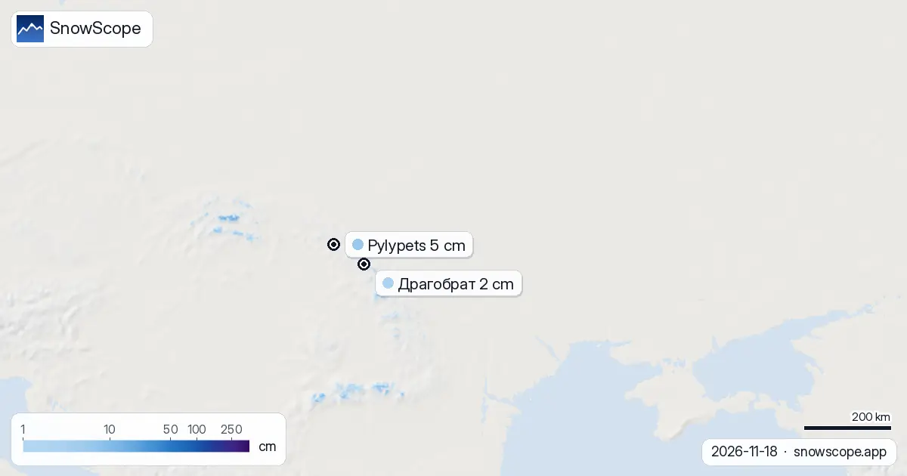
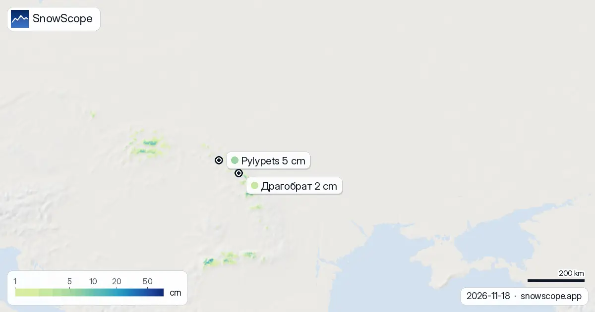

Ukraine loses 1,920 km² of snow cover in one day as mild air moves through
Ukraine lost nearly 1,920 km² of snow cover in a single day as temperatures rose above freezing across the mountains. What remained on 18 November was just 430 km² of patchy snow, mostly above 1,500 m in the Carpathians.
See the live snow forecast for Pylypets in the SnowScope appSnow depth, powder alerts and the 3D map, free.
Rapid thaw erases early-season snow
Yesterday's snow cover of 2,350 km² shrank to 430 km² today, a loss of 82 percent in 24 hours. This is the behaviour of early-season snow in mild air: it melts fast because the snowpack is thin, wet, and sits on warm ground. From a hydrologist's view, this water has already left the mountains—it ran into streams rather than storing as mountain reserve.
The thaw was not random. Where snow fell hardest in the past 72 hours—the Borzhava ridge (15 cm), Chornohora (14 cm), and the Gorgany (12 cm)—the cover has largely vanished anyway. Even at higher elevations, the snowline retreated to 1,500 m. Below that height, snow is now gone or exists only in patches.
| Day | White area | Most new snow in 3 days | Deepest resort |
|---|---|---|---|
| Monday 16 November | 1,650 km² | 2 cm | Гірськолижний комплекс "Плай" |
| Tuesday 17 November | 2,360 km² | 6 cm | Драгобрат |
| Wednesday 18 November | 430 km² | 6 cm | Pylypets |

Snow depth by elevation: a thin, fragile base
Between 1,500 m and 2,000 m, our snow model shows a mean depth of 3 cm and 72 percent cover. This is early-season snow at its most vulnerable: shallow, discontinuous, and sensitive to any warming. Between 1,000 m and 1,500 m, cover exists on only 5 percent of terrain and depth averages 0 cm. Below 1,000 m there is no snow at all.
The thin base explains why yesterday's heavy fresh snow did not survive the thaw. A single mild day removed most of it. For skiers, this means that even on the highest peaks rocks and roots remain hazards under any remaining white patches.

Three days of retreat after seven days of build
One week ago, Ukraine held 5,400 km² of snow cover. By 16 November, that had fallen to 1,650 km². Yesterday it was 2,360 km² (a brief stabilization), and today it dropped again to 430 km². The pattern shows a volatile early season: rapid accumulation followed by rapid loss. Snow does not yet have the depth or cohesion to resist warm air.
On the same dates, the leader at the top of mountains has changed hands. Гірськолижний комплекс "Плай" led on 16 November with 41 cm. Драгобрат took over yesterday with 11 cm. Today Pylypets leads, though only with 5 cm at its base (1,165 m). No resort is building a stable snowpack yet.
Where to find what remains: highest ridges only
Драгобрат, the highest resort at 1,706 m, still holds 2 cm and received 11 cm in the past 72 hours. Despite today's thaw, its upper slopes have kept some white. Pylypets, at 1,165 m, has 5 cm and saw 5 cm of new snow in three days, but sits lower and has lost more cover in the melt.
The Borzhava ridge and Chornohora—the two zones where the most snow fell recently—will have the best remaining patches, though at this depth and after today's thaw, continuous runs are not yet possible. Snow is confined to above 1,500 m and concentrated on north-facing slopes where sun angle is lowest.
Next week brings cooler air and more accumulation
New snow is forecast to begin on 19 November, with the heaviest day on 20 November (8 cm expected). Over the next three days, 16 cm is likely. By next week (26 November to 2 December), our model predicts 22 cm in the week ahead and 44 cm in the second week—a significant reversal if temperatures hold cold enough.
This will be the test of whether a true early-season base forms. If the air stays mild, fresh snow will melt as quickly as today's cover did. If a cold pattern locks in, the mountains will begin to build a sustainable snowpack for the first time.
Comparison with neighbours
Romania's ski areas hold 30 cm at their leader (Ski Vidra) and 5 percent white cover across the country. Poland's mountains, farther north and already colder, have 46 cm at Karpacz and also 5 percent cover. Both countries face similar uncertainty: whether this early snow is a harbinger of a snowy winter or a brief flurry before later cold arrives.
For skiers planning a trip to Ukraine in the coming weeks, the mountains are worth watching but not ready. Check avalanche forecasts and local conditions before going off-piste; thin snow over rocks is a hazard on steep slopes. Use SnowScope to track the rebuild over the next 10 days.
Tips for skiers
- Expect snow to stay above 1,500 m only. Lower slopes are bare; rocks are exposed under any white patches.
- New snow arrives 19 November. If temperatures drop below freezing and stay there, Драгобрат (1,706 m) and high points on the Borzhava ridge will accumulate fastest.
- Check the official avalanche bulletin before any off-piste descent. Early-season snow bonds poorly to warm ground.
- Watch the forecast for the week of 26 November. If cold air settles in, the mountains will finally build a base worth skiing.
- Early-season snow at 2–5 cm depth is fragile. Plan runs on firmer terrain and avoid exposed ridges where wind may scour away fresh cover.
About these numbers
Resort snow depths are the deepest snow on the resort's upper slopes from the SnowScope snow model (about 1 km, run of 18 November); they are estimates for an area, not a measurement at one point. Station values are measurements on the date shown. Forecasts can change. Always read the official avalanche bulletin before going off-piste.
Cite this report
For research, teaching or the press: the numbers and charts are free to reuse under CC BY 4.0 with this citation.
SnowScope (2026), Ukraine loses 1,920 km² of snow cover in one day as mild air moves through, https://snowscope.app/blog/en/2026/11/ukraine-thaw-18-november-2026.html, accessed 2026-11-18
SnowScope (Atlas Labs). (2026, November 18). Ukraine loses 1,920 km² of snow cover in one day as mild air moves through. SnowScope snow reports. https://snowscope.app/blog/en/2026/11/ukraine-thaw-18-november-2026.html
BibTeX
@misc{snowscope2026ukrainethaw18november202,
author = {{SnowScope (Atlas Labs)}},
title = {Ukraine loses 1,920 km² of snow cover in one day as mild air moves through},
year = {2026},
month = nov,
howpublished = {\url{https://snowscope.app/blog/en/2026/11/ukraine-thaw-18-november-2026.html}},
note = {Published 2026-11-18 13:29 UTC; accessed 2026-11-18}
}· CC BY 4.0 · Methods, data and tools →
Pylypets: snow and temperature by height, this winter vs last (tools) →
Follow Pylypets
Free: a message when fresh snow is coming, and the forecast every morning.
More snow reports

Savin Kuk above Žabljak picked up 22 cm of snow from 13 to 19 November and still has 6 cm today. Kolašin 1450 and 1600 are bare. The week day by day, and the next chances.

Up to 30 cm of snow fell on northern Velebit and Bjelolasica on Friday 13 November 2026. By Tuesday it was gone. Day by day, what the mountains kept, and when snow comes back.

Only Borovets and Bansko have a trace of snow at the top today, 2 cm each. A week ago Borovets had 11 cm. Day by day, and the one snowy day in the forecast.